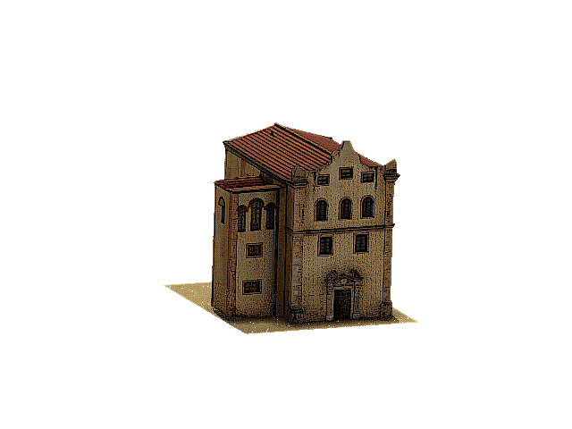

Chiesa di San Benedetto alla Badia

Vero gioiello del barocco siciliano, la chiesa è celebre in tutto il mondo per il suo straordinario pavimento interamente realizzato in maiolica del Settecento...
Orari:
Mar - Dom: 09:00 – 12:30 | Lun: 14:30 – 18:30
Biglietti:
Intero € 2,00 | Ridotto € 1,00